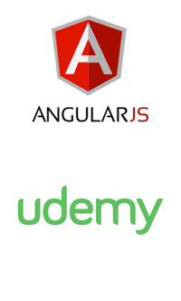

HOLA, SOY FERNANDO, UN INSTRUCTOR EN LÍNEA Y DESARROLLADOR.
Un poquito de mi historia...Nací en Guápiles, Pococí, Limón, en Costa Rica en 1985, realmente casi no conozco el cantón de Pococí, pareciera que mis papas fueron sólo a parirme allá.. (jeje)
A los pocos años, recuerdo que mi papá me sentaba en sus regazos mientras programaba y hacía magia en MS DOS, yo lo veía sin saber absolutamente nada de lo que estaba pasando en esas pantallas negras con letras blancas y a veces eran negras con letras verdes. Poco tiempo después mi papá programaba juegos como el de un ahorcado (ese juego encontrar la palabra adivinando letras), lo hizo para que yo aprendiera ingles.
El tiempo pasaba y mi familia tenía una pequeña empresa de reparación de computadoras en San José, Costa Rica. No nos iba mal pero tampoco tan bien, recuerdo que los clientes les dejaban sus computadoras y yo mediante comandos de DOS, exploraba todos los directorios en busca de juegos (no existía Windows en esos momentos). De esa forma logré jugar el Príncipe de Persia, simuladores de aviones como F15, Radix, otros que me daban mucho miedo como HEXEN y Doom. Tenía entre 5 a 7 años a todo eso…
Para no hacer tan larga la historia, a mi papá le ofrecieron un trabajo en Honduras, a los pocos meses nos fuimos a vivir con él a ese país (muy hermoso por cierto)… estudie bachillerato en técnico en computación y luego saque la carrera universitaria de sistemas de computo también. Durante mis estudios de colegio y universidad ya trabajaba con mi papá haciendo software para clientes, también era freelancer, así como todos, me toco desde enseñar a conectar una impresora hasta crear páginas web.
Una vez en mi trabajo de tiempo completo, tuve la oportunidad de trabajar en Java, C#, Visual Basic.net, bases de datos en Foxpro, SQL Server, Access y Oracle 11g (luego 12), muy interesante todo lo que aprendí ahí; de hecho dedicaba una hora al día durante muchos años en estudiar nuevas tecnologías o como mejorar mis técnicas de programación.
Pasaron 9 años en ese lugar, me trasladaron a dos departamentos de informática de la misma organización, y para serles honesto, no le caía bien a muchos de mis compañeros de trabajo, porque siempre decía que TODO se podía hacer en programación y por lo general se sentían atemorizados a que yo dijera cosas como: “Eso lo podemos tener listo en 2 semanas” ó “Si se puede hacer eso”, ellos son/eran muy buenos desarrolladores en su momento, pero no querían salir de lo mismo… y me frustraba mucho no poder implementar nuevas tecnologías en el departamento de informática.
Intente muchas cosas antes de terminar dando clases en línea, cree un sistema de envío masivo de correos electrónicos llamado “Perfect-Email”, debo de darle crédito a mi hermana Andrea Herrera, ya que ella fue quien le puso el nombre. Hice un sistema de presentaciones HTML muy bonito basado en el motor que desarrollo un ruso (no recuerdo quien), luego probé redes de mercadeo, enseñar español a personas que hablaran ingles… Hice aplicaciones para IOS y Android sin muy buenos resultados… Intente muchas cosas que no resultaron bien en su momento…
En el 2012 comencé a trabajar para Envato Marketplace, es un lugar donde puedes encontrar muchas cosas interesantes como temas HTML y para Wordpress, audios, música, fotos, templates de videos y códigos de programación para tu sitio web. Esa sección de Envato se llama CodeCanyon, muy bonitos los nombres que esa gente le da a sus secciones, cree aproximadamente 35 plugins a punta de sudor, sangre, lagrimas y café. Mi trabajo ahí era bonito, hacía un plugin, lo probaba y lo subía para venderlo… luego tenía que darle mantenimiento y atender gente de todo el mundo que compraba mi plugin… CodeCanyon me nombró “Autor de la Semana”, cosa que para mí fue un gran honor, ya que no tenía idea que mi trabajo ahí lo notaba alguien…

En el 2015, queriendo mejorar mi conocimiento de AngularJS, entre a muchos cursos online de
varias
páginas web como Oja.la, Cursera, Edx, Eduonix e Udemy, todos los cursos de Angular me parecían
muy
malos, les faltaban cosas, me dormía en las clases de los instructores… Cuando hice el último,
un
curso en Udemy sobre Angular, el curso no era ni bueno ni malo, pero vi que tenía como 4000
alumnos!, y yo quede así: “WHAT THE FUCK!” (en realidad dije “qué putas!”, pero es para que me
entiendan), me sorprendió ver tanto alumno en un curso de 200 dólares, claro, luego me di cuenta
que
a los instructores en Udemy no les compran los cursos a ese precio, pero eso me motivo a
intentar
crear mi primer curso en Udemy.
Cuando iba por la mitad del contenido que quería enseñar, me fui dando cuenta que crear un curso en
línea no es tarea fácil, es mucho, mucho, mucho más difícil de lo que la gente piensa, ya que uno
tiene que pensar el programa, escribirlo, grabar videos, editarlos, borrar errores, repetir la
grabación, pelear con las loras y perros de los vecinos, volver a grabar porque una motocicleta paso
cerca, porque tocaron la puerta del cuarto donde grababa videos, subirlos con una conexión de
internet de 7 MBs, de los cuales sólo dan 0.7 KBs de subida… en fin, no es fácil.
Tarde 3 meses en llegar al punto de mi curso de AngularJS donde me dije a mi mismo: “Estoy arto!” (realmente dije una palabrota), “Ya no puedo seguir, estoy cansado, no se si esto me dejará dinero, no se si llegaré a tener alumnos, no tengo a ningún seguidor en ninguna red social… de hecho no me gustan las redes sociales”, y comencé a pensar tan negativamente, que mi mejor alternativa fue, terminar el curso, subirlo y ver que pasaba.
Udemy hizo su parte promoviendo mi curso, el primer mes creo que alcance como 20 alumnos e hice 140 Dólares!, WOOHOO!, sumado a los 300 que hacia en CodeCanyon 440 dólares por internet… WOOHOO, más lo que hacia en mi trabajo de tiempo completo… honestamente, me sentí súper bien, luego me di cuenta que el dinero de Udemy me caería dos meses después porque hay 30 días muertos por si acaso la gente quiere que les regresen su dinero :(
Entonces, decidí hacer otro curso, uno de jQuery para intentar duplicar mi ingreso… lo hice lo mejor que pude porque estaba emocionado, me decía: “Tengo 35 plugins en CodeCanyon a puro jQuery, ese curso será un éxito”, y pues, realmente no le ha ido mal a ese curso, tampoco duplico mi ingreso, pero si comenzó a generarme un poco más Udemy.
Realmente la verdadera inspiración llego a los meses después en Udemy, empezaba a recibir retroalimentación de mis pocos estudiantes de los cursos de AngularJS y jQuery, muchos comentarios muy buenos y otros que me enojaban porque eran críticas e insultos. Entre los mensajes bonitos, me decían cosas como: “Explicas mejor que mi profesor”, “Ojala tu fueras quien diera mis clases de programación”, “Contigo si entiendo el por qué de las cosas”… Fueron mensajes tan inspiradores, que me decía a mi mismo “Fernando, estoy haciendo un sueño mío realidad… eres un verdadero profesor”, AHH se me había olvidado mencionar, que mis sueños siempre fueron ser un desarrollador de aplicaciones y también dar clases de programación en Universidades (Di clases un tiempo en una universidad pero realmente no me gusto la experiencia xD)
En fin, en Udemy logré fusionar mis dos sueños, ser un profesor y desarrollar aplicaciones, ahora le puedo sumar el hecho de que me apasiona estudiar nuevas tecnologías y frameworks, me encanta ayudar a la gente y hablar de programación y video juegos!, me encanta mi nuevo trabajo.
A finales del 2016, estaba cansado de estarle rogando a mis jefes en mi trabajo, que por favor me nivelaran mi salario, era el desarrollador más mal pagado de todo el lugar y en 9 años logre desarrollar más de 60 aplicaciones (grandes y pequeñas) mientras que todo el departamento de desarrollo junto, solo tenía 30 en 15 años de existencia… me pagaban alrededor de 500 Dólares (no era mucho en su momento) por sistemas que valían miles… 2 años de estar solicitando nivelaciones sin lograr nada, era una empresa del estado y el cuello político se sentía… también me afecto la nacionalidad en el país extranjero y que todo lo hacía legalmente, hablando con las personas respectivas…
A finales del 2016, me ofrecieron otro trabajo, decidí tomarlo, puse mi retiro voluntario en la empresa donde estaba y al fin se asustaron de que me iba… capacite al personal que iba a ser mi sucesor, ha estas alturas no se si están bien o mal, pero casi no me llaman, por lo que asumo que se las han ingeniado o ya no usan mis sistemas. Cuando iba a firmar en el otro lugar, el contrato me lo cambiaron a último momento, agregando cosas que iban a ser consumidoras de mucho tiempo extra, y después de hablar con el “nuevo jefe” me di cuenta que no era buena idea aceptar ese trabajo…
Ese mismo año, en el 2016, me case con una linda hondureña Melissa Flores, toda la historia de mi boda y como nos conocimos es otra historia que contar jeje, pero ella siempre me ha apoyado en todo… así que el día que llegue y le dije: “Amor, no acepte el otro trabajo, creo que me dedicaré sólo a enseñar en Udemy”… Ella me dijo: “No me jodas pelotudo!” (Bromas jeje) ella no dice eso… Melissa me apoyo con la decisión, ha estado conmigo todo el tiempo, dándome apoyo y soporte cuando lo he necesitado.
Para esas alturas, con el trabajo que hacía en Udemy, logramos sacar la casa donde actualmente vivimos, una casa pequeña y humilde pero muy bonita y llena de amor y amigos que llegan a beber los fines de semana! (y yo también tomo jeje)… El banco que nos dio el préstamo de la casa, no nos reconocía el dinero que yo hacía en línea, por lo que no nos podía prestar lo suficiente para comprarla, pero yo tenia mucho dinero ahorrado de Udemy, por lo que logramos dar la prima de la casa gracias a esos ahorros que hice de Udemy. Pero esta empresa norteamericana ubicada en San Francisco, no solo nos ayudo con la casa… La luna de miel, la comida, compras, cambio de computadora, pago del carro… tantas cosas que hemos hecho con el ingreso de Udemy que realmente no lo puedo creer… aún hoy no lo puedo creer.
En fin, empecé en febrero del 2017 a trabajar haciendo cursos en Udemy a tiempo completo, logré terminar mi curso de Angular 2, que ha sido un éxito, muchas personas les ha gustado y me han dado retro alimentación muy buena (eso incluye criticas, insultos y buenas vibras), pero lo importante es que cualquier cosa que recibas, lo bueno y lo malo, te hacen crecer, aprender y sobre todo, mejorar mis cursos para que mis estudiantes aprendan lo que necesitan o desean saber, con mi forma particular de enseñar. (Gracias por esto)
Puedo seguir hablando y contado mi historia hasta el día de hoy, que me encuentro en el aeropuerto internacional de San Francisco, Estados Unidos, esperando mi vuelo a casa, después de estar en Udemy Live 2017; Una gran experiencia la que estoy viviendo, que me hace pensar en el momento que no tenía fe en mi primer curso… Quiero llegar a casa, ver a mi esposa, a mi perrita Cake, mis papas y hermanas, mis amigos, mi familia… Quiero seguir enseñando en línea, quiero seguir formando parte de la vida de mis alumnos alrededor del mundo, quiero ayudar a muchas personas de latino américa que no tienen recursos para pagar una universidad, quiero seguir creando contenido gratuito, quiero poder seguir siendo instructor por lo que resta de mi vida.
Intenta hacer pequeños logros todos los días. Si lo haces así,
Imagínate lo que lograrás en un mes... Un año... Una vida...